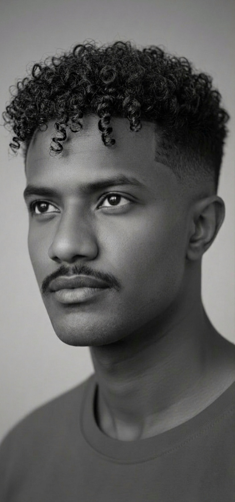
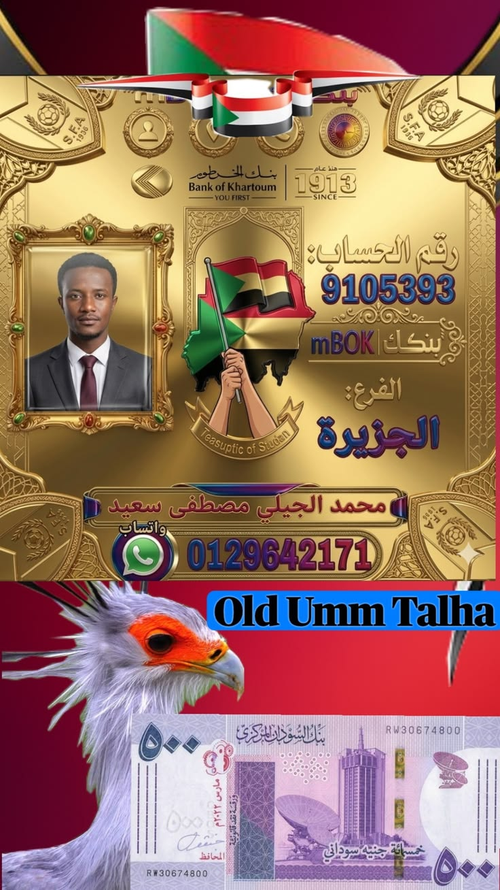

إشراف: سفير القوافي
محمد الجيلي مصطفى سعيد
نعمل معاً من أجل نهضة المنطقة وتقديم الخدمات النوعية لأهلنا الكرام.
تواصل مباشرة عبر واتساب
ركن الدكتورة ناهد الجيلي الطبي
- فحص السكر الصائم: يتطلب صياماً من 8 إلى 12 ساعة لضمان دقة النتيجة.
- تحليل البول: يفضل دائماً عينة "منتصف البول" الصباحية لتجنب الشوائب الخارجية.
- وظائف الكلى: شرب الماء الكافي قبل الفحص ضروري إلا إذا طلب الطبيب غير ذلك.
- فحص الدهون: يحتاج صياماً تاماً لمدة 12 ساعة (يسمح بالماء فقط).
- تنبيه: يجب إخبار المخبري بأي أدوية تتناولها، لأن بعضها يؤثر على النتائج الكيميائية.
- الحروق البسيطة: ضع الجزء المصاب تحت ماء جارٍ فاتر لمدة 15 دقيقة. لا تستخدم الثلج مباشرة.
- النزيف: اضغط مباشرة وبقوة على الجرح بقطعة قماش نظيفة وارفع العضو المصاب للأعلى.
- الإغماء: اجعل المصاب يستلقي على ظهره وارفع قدميه للأعلى لتحسين تدفق الدم للدماغ.
- الكسور: لا تحاول تحريك العضو المصاب، قم بتثبيته كما هو حتى وصول الإسعاف.
- التسمم: اتصل بالطوارئ فوراً ولا تحاول إجبار المصاب على التقيؤ ما لم يطلب منك المختص ذلك.
* هذه المعلومات لغرض التوعية فقط، استشر طبيبك دائماً في الحالات الطارئة *
دعم مشاريع المبادرة
مساهمتكم هي الوقود لاستمرار مشاريع الإعمار والخدمات في المنطقة.
بنك الخرطوم (بنكك)
9105393
فرع الجزيرة - باسم: محمد الجيلي مصطفى

يداً بيد نحو مستقبل أفضل
منصة أبناء أم طلحة القديمة - بذرة خير لنماء دائم.